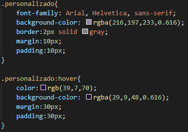

Se quiser colocar várias partes do texto com h2 ou outra tag:
Segura a tecla Alt e vai selecionando as partes...

Após, clica em Ctrl+shift+p, aperta em Quebrar Linha com Abreviação...

E escolhe a tag desejada, nesse caso h2.
Os elementos <div> e <span> são usados para agrupar e estruturar um documento e são frequentemente usados em conjunto com os atributos class e id.
O elemento <div> é um elemento block-level. Tem a função de agrupar elementos html, definindo blocos de contéudo sempre iniciando uma nova linha e ocupando toda a linha.
Exemplo 1:
Exemplo 2:
Em um arquivo HTML no VS Code...

Após, ainda no VS Code, no arquivo css...

Como aparece quando abre em um navegador...

Nota-se que não há divisórias entre os blocos, para fazer, ir no no VS Code, no arquivo css e colocar margem...

Como aparece quando abre em um navegador...

O elemento <span> é um elemento inline. É um elemento neutro embutido que marca um bloco dentro de uma mesma linha ou parágrafo. Pode ser usado pelo CSS para estilização de partes específicas do conteúdo do documento HTML. Resumindo, é como quando temos um texto e grifamos as partes mais importantes com um marca-texto, que nesse caso, é a tag span.
Exemplo:

Porém, nota-se que não aconteceu nada no navegador...

Assim, deve-se ir no arquivo css e fazer a estilização...

Possibilita personalizar tags do documento HTML para estilização. Temos os seletores do tipo classe e o seletor do tipo id...
O seletor de id usa o atributo id de um elemento HTML para selecionar um elemento específico. Cada id é única. O seletor de id é representado por “#”.
Exemplo 1:
Em um arquivo HTML no VS Code...

Após, ainda no VS Code, no arquivo css...

Observação:
Exemplo 2:
Em um arquivo HTML no VS Code...

Após, ainda no VS Code, no arquivo css...

O seletor de classe seleciona elementos HTML com um atributo de classe específico. O seletor de classe é representado por um ponto, “.”, e tem como alvo elementos com um determinado valor para seu atributo class. Para casos em que haja necessidade de mais de um elemento com a mesma identificação usamos o atributo class.
Exemplo:
Observe que há várias tags div, só que não quero que elas fiquem estilizadas da mesma forma, quero que 3 blocos (representados pelos retângulos vermelhos) fiquem de um jeito (para isso utilizamos o seletor do tipo classe), um bloco (representado pelo retângulo amarelo) seja estilizado de outra forma (para isso utilizamos o seletor id) e um bloco (representado pelo retângulo verde) seja estilizado diferente dos outros blocos (para isso também utilizamos o seletor id)...

Dessa forma, no VS Code, em um arquivo HTML...

Após, ainda no VS Code, no arquivo css...

Outra maneira, mas que fica do mesmo jeito no navegador, é utilizar só .agrupamento...

Usada para definir um estado especial de um elemento. O seletor de classe é representado por dois pontos, “:”. Estão relacionados a um elemento ou uma classe.
Exemplos de Pseudo-Classes:
Exemplo :
Há várias opções de pseudo-classes, como já mencionado, a hover é uma, que ao passar o mouse, muda para o que definimos entre chaves...
Em um arquivo HTML no VS Code...

Quero que o texto dentro da tag span, que está dentro da classe pseudo, não apareça de imediato, mas sim só quando passar o mouse:

No VS Code, no arquivo css...

Usado para estilizar partes específicas de um elemento.O seletor de classe é representado por dois pontos seguido de dois pontos, “::”. Há vários Pseudo-Elementos, como...

Exemplo 1:
Quando seleciono no navegador uma frase, que no arquivo em html está entre a tag h3...

Se quero que ao selecionar fique diferente, posso utilizar o Pseudo-Elemento selection...Então no arquivo css...

Quando abre o documento HTML em um navegador...

Exemplo 2:
No VS Code, no arquivo css...

Asssim, a primeira letra de cada parágrafo, fica estilizada.